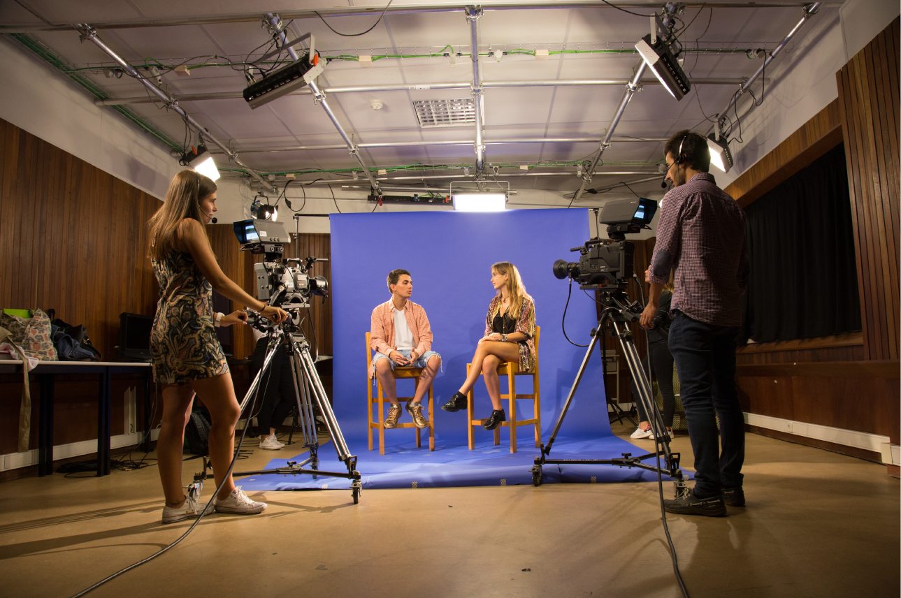

Apresentação

O curso de Jornalismo e Ciências da Comunicação, que tem como base um protocolo assinado pelas Faculdades de Letras, Engenharia, Belas-Artes e Economia, pretende combinar uma formação em Humanísticas (Ciências Sociais) com a vertente das novas tecnologias da informação e da comunicação e as dimensões estética e gráfica.
Depois de frequentarem um tronco comum, nos dois primeiros anos, os alunos optarão, a partir do terceiro ano, por uma das seguintes especializações:
- Jornalismo
- Assessoria de Comunicação
- Comunicação Multimédia
Pretende-se um leque vasto de saídas profissionais, das várias formas de jornalismo (escrito, radiofónico, televisão e online) aos gabinetes de imprensa e de imagem, passando pela produção de software educativo ou de materiais multimédia de todo o tipo.
Pretende-se que o curso tenha uma forte componente prática, em estúdio, laboratório multimédia e redacção informatizada, com os alunos a trabalharem em projectos e, logo que possível, em produções para a Universidade ou para o exterior; em cada semestre há um equilíbrio entre disciplinas teóricas e práticas.